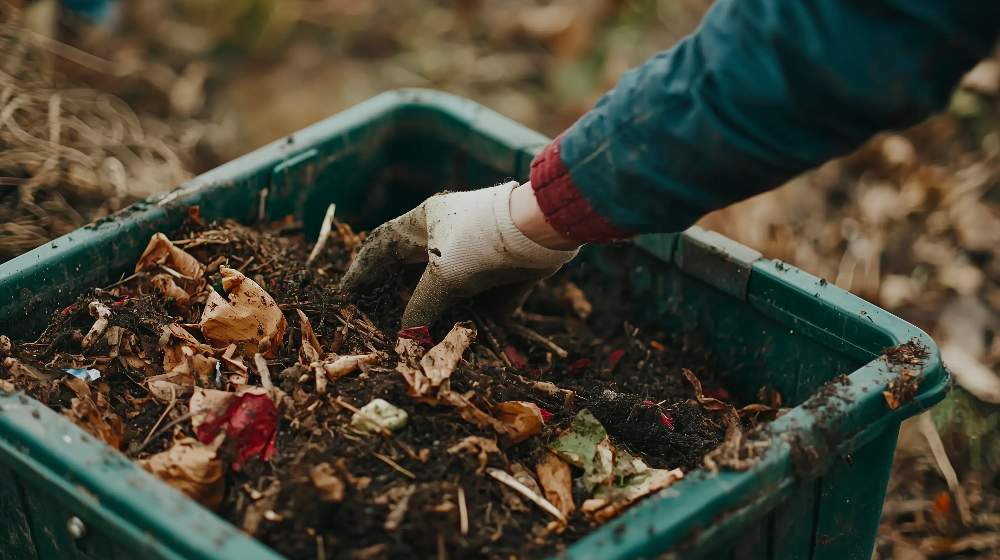
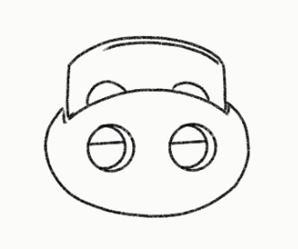
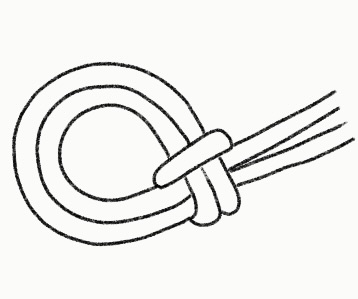
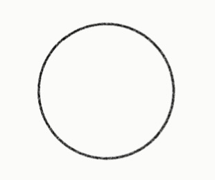
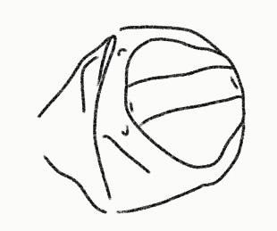
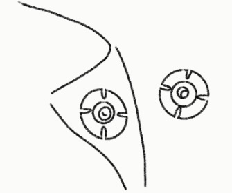
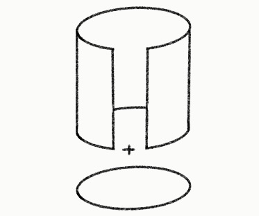
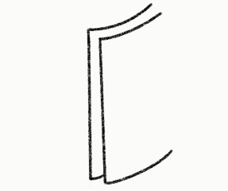
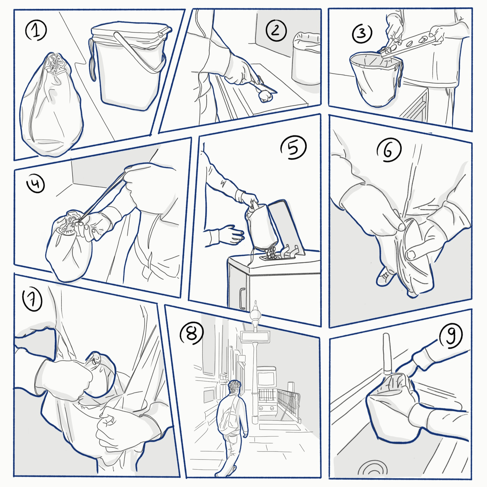
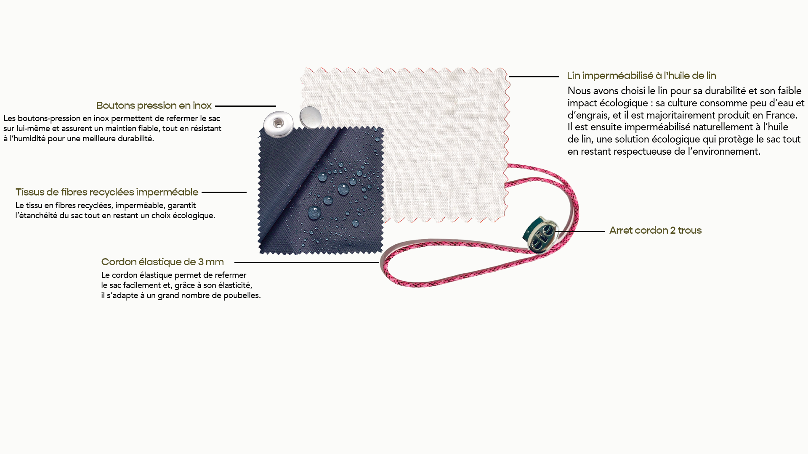

Baggy
Catégorie
Équipement de tri
Année
2026
Matériaux
Lin, tissu en fibre recyclée, cordon elastique,
Collaboration
Clara Mugniot
Baggy est un sac à biodéchets en tissu, conçu pour faciliter leur stockage et leur transport jusqu’aux points d’apport volontaire. Il vise à encourager un tri plus régulier tout en limitant les contraintes liées aux odeurs et à l’hygiène. Le produit existe en plusieurs tailles et s’adapte aux poubelles existantes. Entièrement lavable en machine, il propose une solution simple, accessible et sans rachat superflu.

Scénario initial

Produit final


Attache réglable s'adaptant au format des poubelles

Cordon pour faciliter le transport

Tissu imperméable se lave facilement grâce au patron intérieur circulaire sans couture

Anse pour faciliter le vidage

Bouton pression pour le refermer sur lui-même

Tissu lin respirant protège des odeurs et des déchets

Espace entre les tissus pour que la poubelle se referme
Scénario d'usage

Étapes d'utilisation
- L'utilisateur choisit s'il souhaite utiliser le sac seul ou le placer dans un contenant qu'il possède déjà chez lui.
- Il prépare son repas du soir.
- Il verse tous ses déchets alimentaires dans le sac.
- Une fois le sac rempli, il le referme et l'emporte avec lui en partant au travail.
- Sur le chemin, il s'arrête à une borne dédiée et vide le contenu du sac.
- Il plie et referme le sac vide sur lui-même et accroche les deux pression ensembles.
- Il le range dans son sac.
- Il se rend au travail/courses/activitée et continue sa journée serainement.
- À la fin de la journée, une fois rentré chez lui, il rince le sac et le met à la machine pour le laver.
CMF
